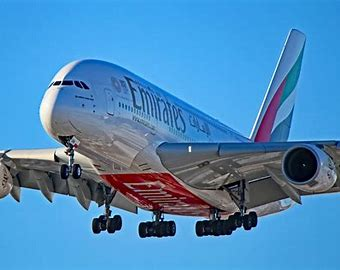
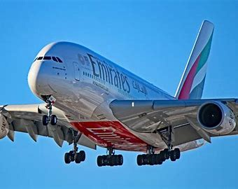

Aviones famosos
Airbus 380
El Airbus A380 es un gran avión de pasajeros de fuselaje ancho que fue desarrollado y producido por Airbus. Es el avión de pasajeros más grande del mundo. Los estudios de Airbus comenzaron en 1988, y el proyecto se anunció en 1990 para desafiar el dominio del Boeing 747 en el mercado de larga distancia. El entonces designado proyecto A3XX se presentó en 1994; Airbus lanzó el programa A380 de 9.500 millones de euros (10.700 millones de dólares) el 19 de diciembre de 2000. El primer prototipo fue presentado en Toulouse el 18 de enero de 2005, con su primer vuelo el 27 de abril de 2005. A continuación, obtuvo su certificado de tipo de la Agencia Europea de Seguridad Aérea (EASA) y la Administración Federal de Aviación de los Estados Unidos (FAA) el 12 de diciembre de 2006. Debido a dificultades con el cableado eléctrico, la producción inicial se retrasó dos años y los costos de desarrollo casi se duplicaron.
 

Boeing 747
El Boeing 747-8 es un avión comercial de fuselaje ancho desarrollado por la compañía estadounidense Boeing Commercial Airplanes. Anunciado oficialmente en 2005, el 747-8 es la sexta generación del Boeing 747. Se desarrolló a partir del Boeing 747-400, con fuselaje alargado en 5,65 metros, alas innovadoras y de eficiencia mejorada. En su versión de carga realizó el primer vuelo el 8 de febrero de 2010, y en la versión Intercontinental voló el 20 de marzo de 2011. El primer ejemplar de la versión de carga fue entregado en octubre de 2011 a la aerolínea de Luxemburgo, Cargolux y el modelo de pasajeros comenzó las entregas en 2012. Es el avión comercial más grande construido en los Estados Unidos y segundo avión de pasajeros más largo del mundo, pues ya ha sido superado por el Boeing 777-9X. Justamente esta versión carguera realizó el primer vuelo transatlántico con biocombustible, una mezcla de un 15 por ciento de biocombustible basado en camelina y un 85 por ciento de queroseno tradicional. La primera entrega del modelo de pasajeros se produjo en mayo del 2012 a la línea aérea alemana Lufthansa.


Airbus 350
El Airbus A350 es un avión comercial a reacción de fuselaje ancho construido por Airbus. El A350 es la primera aeronave diseñada por Airbus en la que tanto el fuselaje como las estructuras del ala están formadas principalmente por materiales compuestos.8 Puede transportar entre 280 a 366 pasajeros, en configuración de tres clases, dependiendo de la variante.9 El A350 se concibió originalmente como una variante del Airbus A330 con cambios menores, que estaba destinada a competir con el Boeing 787 Dreamliner y el Boeing 777. Sin embargo, este primer diseño fue rechazado de forma unánime por los clientes potenciales a los que se les presentó el proyecto, lo que obligó a Airbus a revisar su propuesta inicial, aunque desde las diferentes aerolíneas expresaron su apoyo a un rediseño completo del proyecto. La propuesta final incorpora cambios importantes, de la que Airbus afirma que ofrece una mayor eficiencia de combustible, con una reducción hasta un 8 % en el costo operativo respecto al Boeing 787.8 Esta propuesta final del A350 se comercializó por parte de Airbus bajo el nombre de A350 XWB,10 donde las siglas XWB significan Extra Wide Body («cuerpo extra ancho»). El cliente de lanzamiento del A350 es Qatar Airways, que realizó un pedido por un total de 80 aeronaves de las tres variantes.3 Los costes de desarrollo de esta aeronave están previstos en torno a los 12 000 millones de €.11 El prototipo del A350 realizó su primer vuelo el 14 de junio de 2013 y entró en servicio en enero de 2015. A 31 de diciembre de 2017, Airbus había acumulado pedidos por 854 aparatos de las 3 versiones


El Boeing 737 (pronunciado «siete-tres-siete») es un avión de pasajeros, bimotor, de reacción, de fuselaje estrecho, para vuelos de corto a medio alcance, fabricado y desarrollado por la compañía estadounidense Boeing Commercial Airplanes. El 737 se desarrolló como una versión derivada de los Boeing 707 y 727, de menor coste, menor tamaño y bimotor. El 737 se empezó a diseñar en 1964, realizando su primer vuelo en 1967,3 y entró en servicio el 10 de febrero de 1968 con Lufthansa.34 El Boeing 737 es el avión de pasajeros turbofan con mayor número de unidades vendidas de la historia de la aviación.3 Este modelo ha sido fabricado sin interrupción por parte de Boeing desde 1967, con más de 10 000 aeronaves entregadas y 4 600 pendientes de ser fabricadas a finales de marzo de 2018. El 737 es la aeronave comercial que más sonido genera (hasta 109,8 decibelios).5 Del 737 se han fabricado diez variantes distintas desde su inicio, estando la serie Next Generation (-600, -700, -800 y -900) todavía en producción. Estas variantes fueron sustituidas por el Boeing 737 MAX. La fabricación del 737 está centralizada en fábrica Boeing Renton situada en Renton, Washington. Muchos 737 se emplean para mercados en los que anteriormente se empleaban aeronaves del modelo 707, 727, 757, DC-9, y MD-80/MD-90, y este modelo actualmente compite con las aeronaves de la familia Airbus A320. Según un estudio, se estima que hay un promedio de 1 250 Boeing 737 en vuelo en todo momento, con dos unidades despegando o aterrizando en algún lugar del mundo cada cinco segundos.6 Es el modelo más usado en los vuelos nacionales en Estados Unidos


airbus 320
La familia Airbus A320 está compuesta por aviones comerciales bimotores a reacción de pasajeros de corto y medio alcance y de fuselaje estrecho, fabricados por Airbus. La familia incluye los Airbus A318, Airbus A319, Airbus A320 y Airbus A321, así como los Airbus Executive and Private Aviation (aviones de negocio y privados). Los A320 son también nombrados A320ceo(opción de motor actual, en inglés: Current Engine Option) tras la introducción de los nuevos A320neo en 2016.4 El montaje final de la familia se lleva a cabo en Toulouse, Francia, y Hamburgo, Alemania. Una planta en Tianjin, China, también ha estado produciendo aviones para líneas aéreas chinas desde el año 2009,5 mientras que una planta de ensamblaje final en Mobile, Alabama entregó su primer A321 en abril de 2016.6 La.. familia de aviones puede acomodar hasta 220 pasajeros y tiene un alcance de 3.100 a 12.000 kilómetros (1700 a 6500 millas náuticas), dependiendo del modelo.